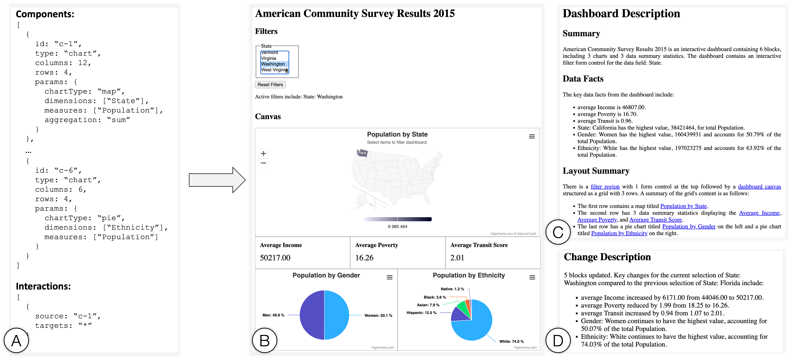

Arjun Srinivasan, Tim Harshbarger, Darrell Hilliker, and Jennifer Mankoff
Dashboards are frequently used to monitor and share data across a breadth of domains including business, finance, sports, public policy, and healthcare, just to name a few. The combination of different components (e.g., key performance indicators, charts, filtering widgets) and the interactivity between components makes dashboards powerful interfaces for data monitoring and analysis. However, these very characteristics also often make dashboards inaccessible to blind and low vision (BLV) users. Through a co-design study with two screen reader users, we investigate challenges faced by BLV users and identify design goals to support effective screen reader-based interactions with dashboards. Operationalizing the findings from the co-design process, we present a prototype system, \azimuth{}, that generates dashboards optimized for screen reader-based navigation along with complementary descriptions to support dashboard comprehension and interaction. Based on a follow-up study with five BLV participants, we showcase how our generated dashboards support BLV users and enable them to perform both targeted and open-ended analysis. Reflecting on our design process and study feedback, we discuss opportunities for future work on supporting interactive data analysis, understanding dashboard accessibility at scale, and investigating alternative devices and modalities for designing accessible visualization dashboards.